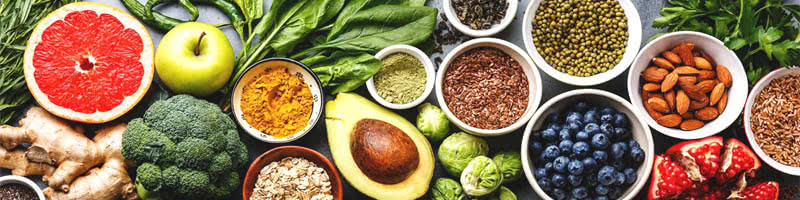
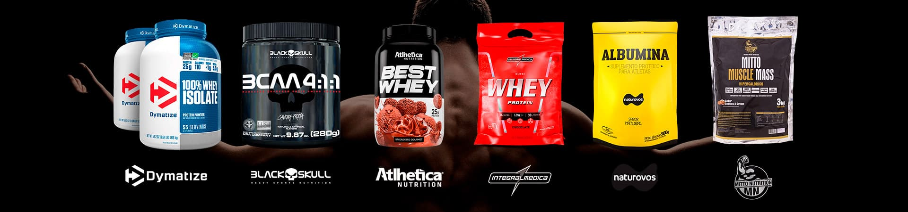

Alimentação e seus objetivos
Uma alimentação saudável é aquela que garante ao organismo todos os nutrientes de que ele precisa. Isso significa que, para termos uma alimentação adequada, não temos que pensar apenas em quantidade, é fundamental pensar na qualidade do que estamos ingerindo, bem como na variedade e sempre pensar no equilíbrio em nossas refeições. Atualmente, erramos muito quando o assunto é alimentação saudável, principalmente, devido ao ritmo de vida que temos levado. Alimentos ricos em açúcar, gordura e sal, ausência de alimentos frescos em nossos pratos, pouca variedade e pular as refeições são alguns dos erros que cometemos ao nos alimentar.
Para se ter uma alimentação saudável, alguns pontos importantes devem ser destacados, como:
- Não pular refeições;
- Comer verduras, legumes e frutas diariamente;
- Alimentar-se de alimentos in natura ou minimamente processados;
- Evitar alimentos com muita gordura;
- Reduzir a quantidade de sal nos alimentos;
- Evitar alimentos industrializados;
- Beber pelo menos dois litros de água diariamente.
Alimentos para ganhar massa muscular
Existem diversos alimentos que podem auxiliar na dieta de quem busca ganhar massa muscular. Em geral, uma dieta rica em carboidratos e proteínas pode apresentar resultados positivos na hipertrofia. Além disso, o consumo de suplementos como o whey protein – à base da proteína do soro do leite – também podem contribuir para um melhor desenvolvimento dos músculos. Uma dieta equilibrada que envolve as três principais refeições do dia e pequenos lanches nos intervalos pode garantir o melhor para a sua saúde e para a sua hipertrofia. No entanto, lembre-se de fazer um acompanhamento com um nutricionista, para que você tenha ainda mais segurança no momento de iniciar uma nova dieta.
Emagrecimento
Emagrecer com saúde depende da combinação de dieta saudável e balanceada com atividades físicas regulares. Assim, muito além do valor calórico de cada alimento, deve-se prezar pelo seu valor nutricional - como, por exemplo, a presença de nutrientes como vitaminas e minerais -, contemplando todos os grupos alimentares nas refeições. A pirâmide alimentar classifica os alimentos em oito grupos: carboidratos, vegetais, frutas, carnes, leite, leguminosas, gorduras e açúcares. Cada um desses grupos possui sua própria função e importância para a saúde, e deve ser inserido na dieta em níveis adequados para atingir o emagrecimento. O acompanhamento de um nutricionista também é indicado para emagrecer com saúde. Esse profissional é capacitado para desenvolver uma dieta hipocalórica que enfatize não somente o emagrecimento, mas que também preze pela saúde e pelo bem-estar.
Suplementos
São produtos com características e propriedades similares às alimentares, considerando os valores nutricionais. No entanto, os suplementos são substâncias químicas e concentradas produzidas nos mais variados formatos. Eles podem ser consumidos em forma de cápsulas, líquidos, pó, granulados e pastilhas. A composição de vitaminas, minerais e vitaminas, beneficia a saúde do coração, rins, fígado e músculos. Antes de mostrar a utilidade e a eficácia dos suplementos, é importante dizer que eles não substituem uma . Portanto, devem ser usados exatamente como complemento, para balancear e equilibrar as taxas de nutrientes do corpo. Assim, eles serão capazes de cumprir a missão a qual foram desenvolvidos. Portanto, eles servem para complementar a alimentação, para deixá-la mais saudável e balanceada, de acordo com os objetivos de cada pessoa.
